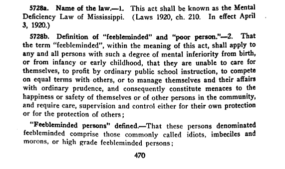

Jackson, Mississippi: William Faulkner's Aura of Menace
The Place: The Mississippi School and Colony for the Feebleminded
{kind=link}
I chose to look into the Mississippi School and Colony for the Feebleminded because of the role it plays in William Faulkner's classic 1929 novel The Sound and the Fury. In the novel, Benji Compson, who is cognitively disabled, is threatened with being committed to the asylum. Like the H.P Lovecraft Arkham stories, Faulkner's novel is also a primary source revealing attitudes on how the cognitively disabled were cast as threatening and institutions existed in part to quarantine the threat they posed.
The Source: 1921 Law Establishing the Colony
{kind=link}
I found this source searching Google Books (using Advanced Search and selecting "Full View Only" to limit it to complete documents). Google Books has a number of public documents like legislation and one of the results was the text of the 1921 law establishing the Mississippi School and Colony for the Feebleminded. I thought this would be a good source for learning more about why the institution was created.
Digging Deeper: To Confine a "Menace"
{kind=link}
{kind=link}
In searching the document for mentions of the institution I found this text stating the institution's purpose. The emphasis on the mentally disabled as menaces and burdens is really striking, "feeble-minded" here means to "constitute menaces to the happiness or safety of themselves or of other persons in the community". Even though "School" is in the institutions title, it is clear that the goal of the project is to confine and segregate those seen as mentally unfit.